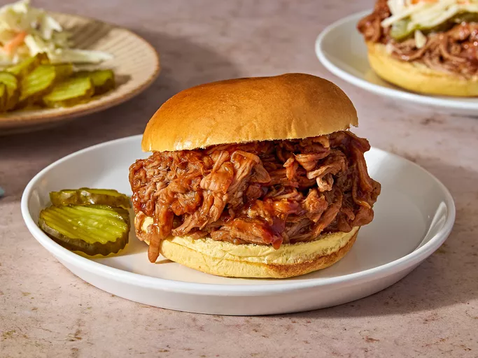

Pulled Pork

Tastey Pulled Pork
it's sure to bring rave reviews!
- 1 (2 pound) pork tenderloin
- 1 (12 fluid ounce) can or bottle root beer
- 1 (18 ounce) bottle your favorite barbecue sauce
- 8 hamburger buns, split and lightly toasted
- Gather the ingredients.
- Place pork tenderloin in a slow cooker; pour root beer over top.
- Cover and cook on Low until pork shreds easily, 6 to 7 hours. Note: the actual length of time may vary according to the individual slow cooker.
- Drain well. Stir in barbecue sauce.
- Serve on hamburger buns.